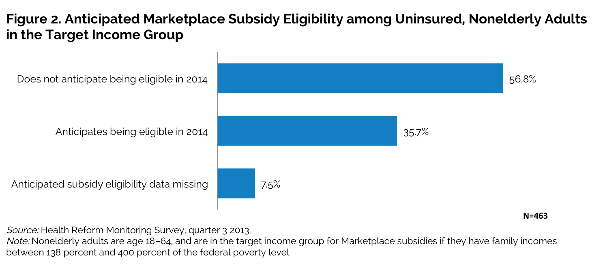
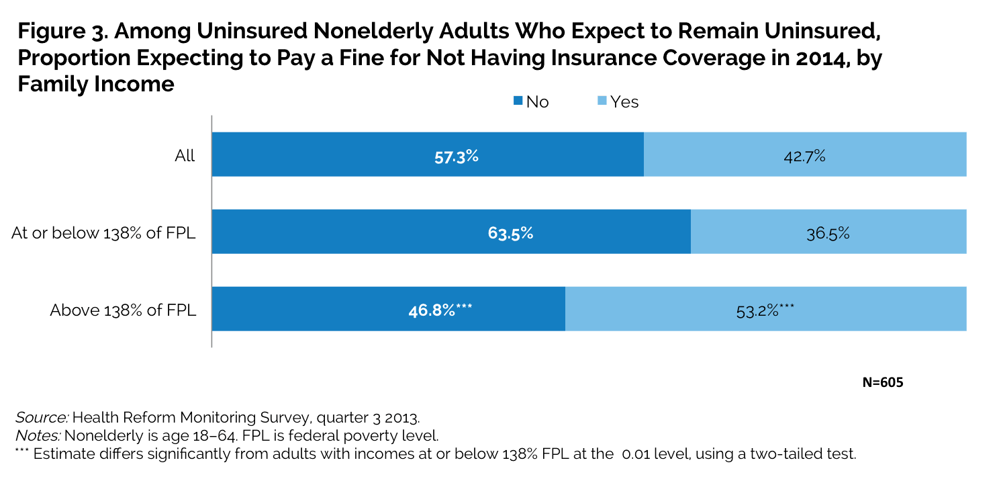

|
||||||||||||||||||||||||||||||||||||||||||||||||||||||||||||||||||||||||||||||||||||||||||||||||||||||||||||||||||||||||||||||||||||||||||||||||||||||||||||||||||||||||||||||||||||||||||||||||||||||||||||||||||||||||||||||||||||||||||||||||||||||||||||||||||||||||||||
What Health Insurance Coverage Changes Are the Uninsured Anticipating for 2014?
Fredric Blavin and Michael KarpmanJanuary 21, 2014
On January 1, 2014, millions of uninsured adults became eligible for subsides to purchase health insurance or newly eligible for Medicaid through the Patient Protection and Affordable Care Act (ACA).1 In 25 states and the District of Columbia, the vast majority of nonelderly adults with incomes at or below 138 percent of the federal poverty level (FPL) can now enroll in Medicaid (US Centers for Medicare and Medicaid Services 2013).2 Nonelderly adults with family incomes between 138 percent and 400 percent of FPL can receive tax credits to purchase coverage in the new Health Insurance Marketplaces if they are ineligible for public coverage, lack access to affordable employer-sponsored coverage, and are lawful residents.3
Policymakers are keenly focused on whether these two provisions of the ACA (and others) will increase the proportion of Americans with health insurance.
Many factors could shape whether uninsured adults decide to take advantage of the ACA’s coverage expansions. This brief examines one such factor—uninsured adults’ expectations about their coverage status and their access to financial assistance for obtaining coverage as the ACA rollout begins.4 To start, we examine the percentage of nonelderly adults who were uninsured in late 2013, both nationwide and in key sociodemographic and state groups. We then explore whether uninsured adults anticipated becoming eligible for Medicaid and Marketplace subsidies; whether they expected to have any coverage in 2014; and, among those who anticipated remaining uninsured, whether they expected to pay a penalty as a result of the ACA’s individual mandate.
As ACA implementation proceeds, this analysis offers new insight into uninsured adults’ expectations for gains in health insurance coverage under the ACA and provides an early indication of the potential coverage changes for the uninsured in the year ahead.
What We Did
This analysis draws on data collected in September 2013 from the Health Reform Monitoring Survey (HRMS) using a sample of nonelderly adults age 18–64. We focus on the anticipated coverage gains of adults who reported being uninsured at the time of the survey, assessing differences among subpopulations based on age, race and ethnicity, family income, self-reported health status, and state of residence (states are grouped by their plans to expand Medicaid eligibility).5 Family income is based on the health insurance unit, which includes respondents, their spouses, and any children or stepchildren under age 19 living with them. We also examine anticipated Medicaid eligibility among uninsured adults with incomes at or below 138 percent of FPL, the adult Medicaid target population, and anticipated eligibility for subsidies among uninsured adults with incomes between 138 percent and 400 percent of FPL, the target income group for Marketplace subsidies.6 (Because of the limited sample size, we are unable to provide separate estimates for the uninsured population with family incomes above 400 percent of FPL.)
The results are based on HRMS questions about anticipated program eligibility and health insurance coverage changes under the ACA in 2014. Respondents who were uninsured at the time of the survey were asked whether they thought they would be eligible for Medicaid and whether they anticipated being eligible for subsidized coverage in the new Marketplaces. All uninsured respondents were also asked whether they thought they would have coverage. Uninsured respondents who thought they would gain coverage in 2014, and insured respondents who thought their coverage would change, were asked to report the type of coverage they expected to obtain (including an option for expecting to be uninsured). All respondents who anticipated being uninsured in 2014 were asked whether they thought they would have to pay a fine for not having coverage.
What We Found
Almost one in five (17.6 percent) of all nonelderly adults were uninsured on the eve of reform. Overall, 39.3 percent of these adults expected to gain health insurance coverage in 2014. Younger, nonwhite or Hispanic, and healthier adults were more likely to expect to gain coverage (table 1). Adults were much less likely to have insurance coverage if they were younger (i.e., age 18–30), nonwhite or Hispanic, lower-income, or in fair or poor health. The largest difference in coverage was by income group. At the time of the survey, nearly four in 10 adults with incomes at or below 138 percent of FPL (38.9 percent) were uninsured, compared with less than one in 10 adults with incomes above that threshold (9.3 percent). Coverage rates also differed widely by race and ethnicity. Nonwhite or Hispanic adults were more than twice as likely to be uninsured as white, non-Hispanic adults (27.0 percent versus 12.1 percent). Nearly a quarter (23.1 percent) of adults age 18–30 were uninsured, compared with 17.8 percent of those age 31–49 and 12.6 percent of those age 50–64. Uninsurance rates were 10 percentage points higher among those who reported being in fair or poor health than among those in excellent, very good, or good health (26.4 percent versus 16.3 percent). An estimated 19.4 percent of adults in states that are not planning to expand Medicaid eligibility in 2014 were uninsured compared with 16.1 percent of adults in the Medicaid-expansion states, although this difference was not statistically significant.
While 39.3 percent of uninsured adults expected to gain health coverage in 2014, this proportion varied across key subpopulations. The proportion of those who expected to gain coverage was higher for adults age 18–30 than for adults age 50–64 (43.5 percent versus 35.0 percent), for nonwhites or Hispanics than for whites (42.5 percent versus 35.2 percent), and among adults in excellent, very good, or good health than among adults in fair or poor health (41.4 percent versus 30.7 percent). Uninsured adults were somewhat more likely to expect to remain uninsured in non-Medicaid-expansion states (57.5 percent) than in Medicaid-expansion states (51.5 percent).
Nearly a third (31.0 percent) of the adult Medicaid target population thought they would be eligible for Medicaid in 2014. In Medicaid-expansion states, surprisingly, only 32.4 percent of adults in the Medicaid target population thought they would be Medicaid-eligible, not significantly different from the share thinking so in nonexpansion states (29.6 percent; see figure 1). Overall, 38.8 percent of the adult Medicaid target population anticipated gaining coverage in 2014, with those who thought they would be eligible for Medicaid more likely to anticipate gaining coverage than those who did not (73.0 percent versus 22.8 percent; data not shown). The share of the adult Medicaid target population that anticipated gaining coverage did not differ statistically across Medicaid expansion state groups (data not shown).
More than a third (35.7 percent) of uninsured adults with incomes between 138 and 400 percent of FPL anticipated being eligible for subsidized coverage in the Marketplaces (figure 2). The proportion of the target income group for Marketplace subsidies that expected to gain coverage was substantially higher for adults who anticipated subsidy eligibility than for adults who did not (62.9 percent versus 36.6 percent; data not shown).
According to the authors’ tabulations from the Urban Institute’s Health Insurance Policy Simulation Model, most uninsured adults in expansion states with family incomes at or below 138 percent of FPL are likely to be eligible for Medicaid, and most uninsured adults with family incomes between 138 percent and 400 percent of FPL are likely to be eligible for Marketplace subsidies, once the ACA is fully implemented. The low proportion of these target populations expecting to be eligible for Medicaid and Marketplace subsidies may be partly explained by lack of awareness of the ACA coverage provisions. For example, in November 2013, 38 percent of those without insurance said they had heard “nothing at all” about the health insurance Marketplace, and 65 percent felt they still did not have enough information about the law to understand how it will affect them and their family.7 
Less than half (42.7 percent) of adults who expected to remain uninsured in 2014 believed they would pay a fine for not having coverage (figure 3). Higher-income uninsured adults (53.2 percent) were more likely to think they would pay a fine than lower-income uninsured adults (36.5 percent). This finding could be driven by the policy itself, which waives the penalty if affordable coverage is not available or for other hardship reasons;8 and the fact that higher-income uninsured adults could know more about specific ACA provisions. 
What It Means
More than half (54.5 percent) of nonelderly adults without health insurance on the eve of reform thought they would continue to be uninsured in 2014. Many of these adults are likely to forgo coverage at least partly because they do not realize that they are eligible for financial assistance in obtaining health insurance. Only 31.0 percent of the adult Medicaid target population thought they would be eligible, and only 35.7 percent of uninsured adults in the target income group for Marketplace subsidies thought they would qualify for financial assistance. Surprisingly, the share of adults in the Medicaid target population thinking they would be eligible for Medicaid did not significantly differ across expansion and nonexpansion states. In addition, uninsured adults in each target population who thought they would be Medicaid- or subsidy-eligible were more likely to anticipate gaining coverage in 2014 than those who did not think they would be eligible.
The true proportion of uninsured adults eligible for Medicaid or Marketplace subsidies is almost certainly much higher. The low expectations, at least for the Medicaid target population, are probably driven more by unfamiliarity with the new eligibility rules than by knowledge of state policy decisions. In contrast, some adults with family incomes at or below 138 percent of FPL in nonexpansion states might think they will be eligible for coverage in 2014, but will not be. If the ACA’s 2014 coverage targets are to be achieved, more outreach about both the Medicaid eligibility expansion and the availability of Marketplace subsidies is needed.
Among uninsured adults who expected to remain uninsured in 2014, only four in 10 thought they would pay a penalty for not having coverage, an expectation even more prevalent among uninsured adults in the target income group for Marketplace subsidies. Given the large share of uninsured adults who do not know they are eligible for Medicaid or subsidized Marketplace coverage, outreach is also needed to help them avoid the individual mandate penalty.
Overall, these findings demonstrate the need for aggressive outreach and wide dissemination of easily understood information—on the Medicaid eligibility expansion and the availability of Marketplace subsidies, and, given the individual mandate, the financial penalty for lacking coverage.
References
Blavin, Fredric, Katherine Hempstead, Michael Karpman, and Ariel Fogel. 2013. “How the Currently Uninsured Perceive the Cost and Affordability of Health Insurance Coverage.” Washington, DC: The Urban Institute.
Blumberg, Linda J., Sharon K. Long, Genevieve M. Kenney, and Dana Goin. 2013a. “Public Understanding of Basic Health Insurance Concepts on the Eve of Health Reform.” Washington, DC: The Urban Institute.
———. 2013b. “Factors Influencing Health Plan Choice among the Marketplace Target Population on the Eve of Health Reform.” Washington, DC: The Urban Institute.
Buettgens, Matthew, Genevieve M. Kenney, Hannah Recht, and Victoria Lynch. 2013. “Eligibility for Assistance and Projected Changes in Coverage under the ACA: Variation across States.” Washington, DC: The Urban Institute.
US Centers for Medicare and Medicaid Services, Center for Medicaid and CHIP Services. 2013. “State Medicaid and CHIP Income Eligibility Standards Effective January 1, 2014.”
About the Series
This brief is part of a series drawing on the Health Reform Monitoring Survey (HRMS), a quarterly survey of the nonelderly population that is exploring the value of cutting-edge Internet-based survey methods to monitor the Affordable Care Act (ACA) before data from federal government surveys are available. The briefs provide information on health insurance coverage, access to and use of health care, health care affordability, and self-reported health status, as well as timely data on important implementation issues under the ACA. Funding for the core HRMS is provided by the Robert Wood Johnson Foundation, the Ford Foundation, and the Urban Institute.
For more information on the HRMS and for other briefs in this series, visit www.urban.org/hrms.
About the Authors
Fredric Blavin is a senior research associate and Michael Karpman is a research associate in the Urban Institute’s Health Policy Center.
The authors gratefully acknowledge the suggestions and assistance of Sharon K. Long and Katherine Hempstead.
Note 1 More than 12 million adults and children are eligible for subsidized coverage in the health insurance Marketplaces (Buettgens et al. 2013), and nearly 5 million poor uninsured adults are newly eligible for Medicaid in the states expanding that program (“11.5 Million Poor Uninsured Americans Could Be Eligible for Medicaid if States Opt for ACA Expansion,” the Urban Institute, accessed December 23, 2013). 2 In Michigan, Medicaid expansion takes effect in April 2014. 3 Employer-sponsored coverage is considered “affordable” if employee premium contributions for individual coverage do not exceed 9.5 percent of household income. In states that do not expand Medicaid, adults with family incomes between 100 percent and 400 percent of FPL will be eligible for tax credits to purchase coverage through the Marketplaces. 4 Previous briefs in this series have focused on adults’ confidence in their understanding of basic insurance concepts (Blumberg et al. 2013a), perceptions of the cost and affordability of nongroup coverage among the Marketplace target population (Blavin et al. 2013), and the financial and nonfinancial factors that influence health plan choices (Blumberg et al. 2013b). 5 Categories for state Medicaid expansion decisions are based on data from the Centers for Medicaid and Medicare Services as reported by the Kaiser Family Foundation, and are current as of December 11, 2013 (see “State Decisions on Health Insurance Marketplaces and the Medicaid Expansion, as of December 11, 2013”). 6 One limitation of this approach is that we cannot estimate anticipated subsidy eligibility among adults with incomes between 100 percent and 138 percent of FPL in states that do not plan to expand Medicaid in 2014. Using a hot-deck approach, we created three income categories—at or below 138 percent of FPL, between 138 percent and 400 percent of FPL, and at or above 400 percent of FPL—to impute values for observations with missing family size and income information. We are also unable to determine if individuals have access to employer-sponsored coverage deemed affordable under the law. 7 “Kaiser Health Tracking Poll: November 2013,” Kaiser Family Foundation, accessed January 9, 2014. 8 In determining if an individual must pay a penalty for being uninsured, “affordable” is coverage for which the premium for the lowest cost plan option does not exceed 8 percent of household income. Exemptions are also available for those who fall below the income threshold for filing a tax return and for those who are ineligible for Medicaid under the ACA because their states do not plan to expand eligibility, among other groups (“How Do I Qualify for an Exemption from the Fee for not Having Health Coverage?” US Centers for Medicare and Medicaid Services, accessed December 24, 2013). |
||||||||||||||||||||||||||||||||||||||||||||||||||||||||||||||||||||||||||||||||||||||||||||||||||||||||||||||||||||||||||||||||||||||||||||||||||||||||||||||||||||||||||||||||||||||||||||||||||||||||||||||||||||||||||||||||||||||||||||||||||||||||||||||||||||||||||||

 |
 |
 |